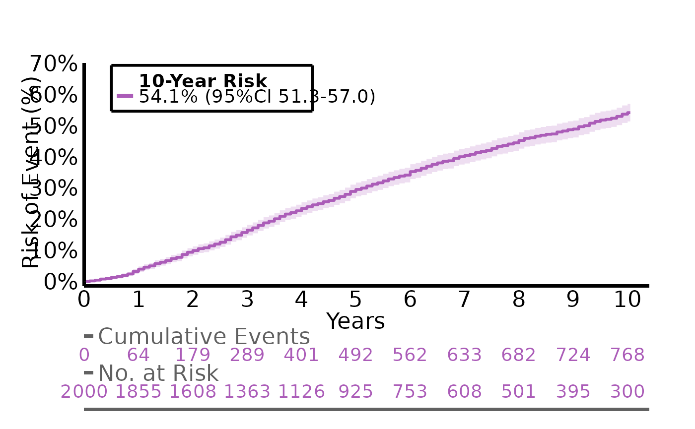
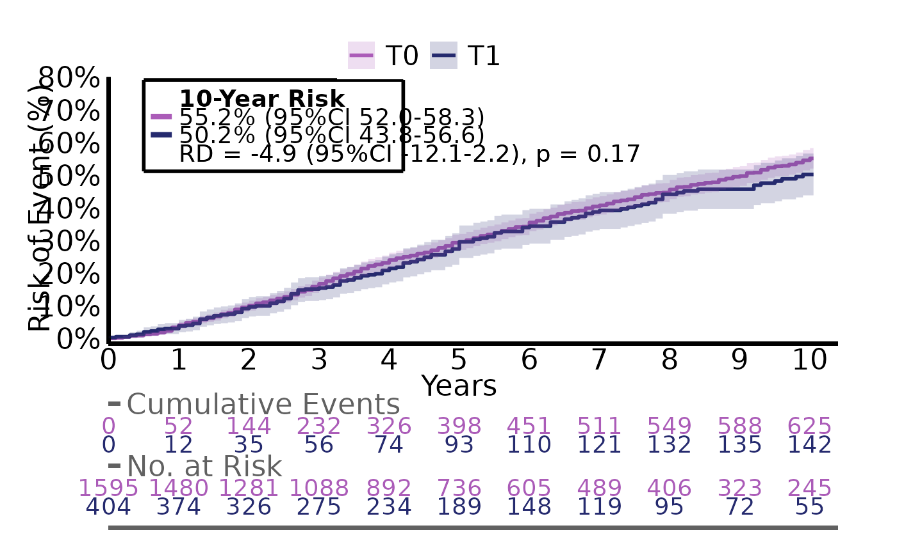
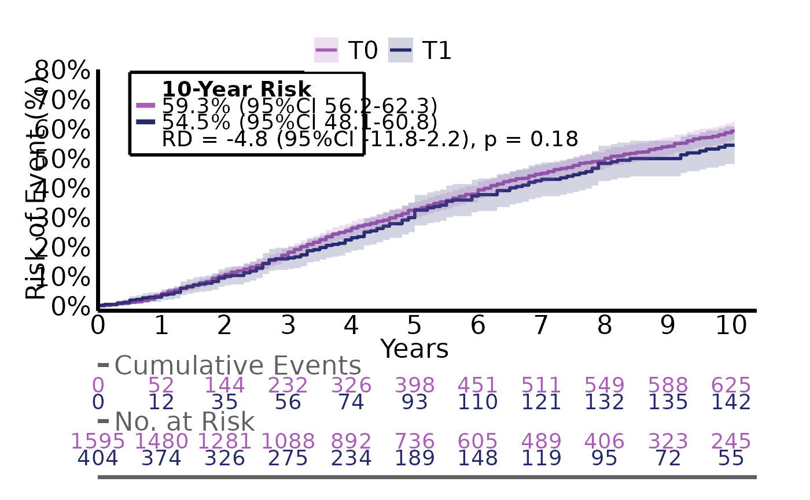
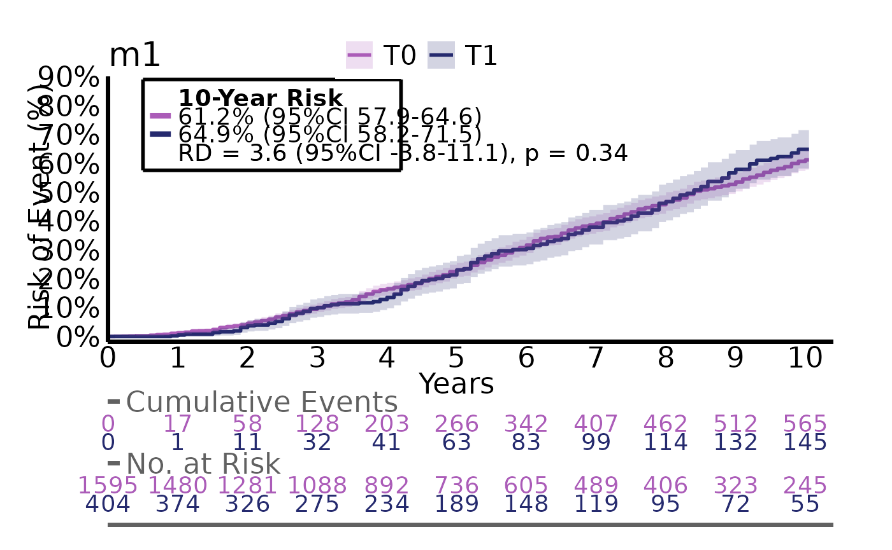
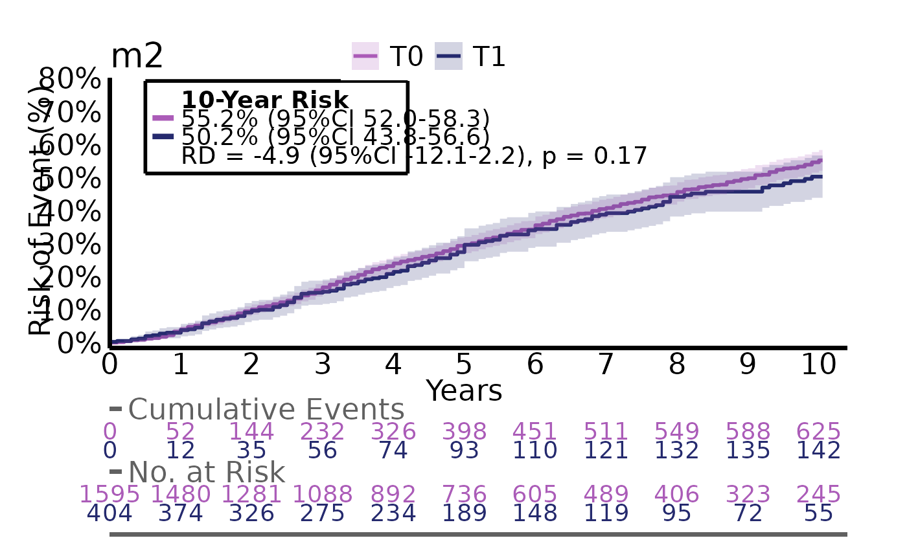
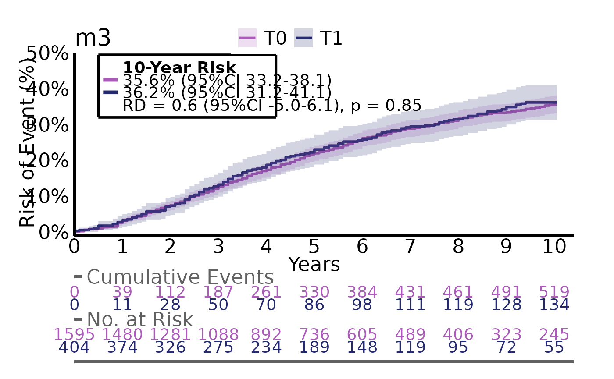

The prerequisites for analysing time-to-event data are two columns: a status indicator and a numeric time-to column for the current status.
#> status time
#> 1 0 5
#> 2 1 1
#> 3 2 3The status indicator indicates whether an event has occured and which
type of event.
- 0 indicates that the patient was event free and the time column
indicates for how long the patient was followed (aka. censoring). This
can be at the end of the database or last clinical visit.
- 1 indicates the main event of interest such has recurrence, metastasis
or death.
- Values above 1 indicates competing events, which are events that
prevents the main event from occuring or events that makes the patient
irrelevant for further follow-up.
In this example, the first patient was followed for 5 years with no event occuring, the second patient had the event of interest after 1 year and the third patient had the competing event at 3 years.
Conversion of dates to event/time columns
Often the events of interest are collected as dates as this
automatically includes both status (blank = 0, and present = 1) and the
time point. The structR function helps with converting
dates to status/time columns for multiple events. First, we simulate a
dataframe with 10 patients:
n=10
df <-
data.frame(
id = seq(1,n),
opdate = c(rep("2000-01-01", n-1), "1990-01-01"),
follow = rep("2025-01-01", n),
recurrence_date = c(NA, "2005-01-01", NA, NA, NA, "2005-01-01", "2005-01-01", NA, "2005-01-01", "2005-01-01"),
metastasis_date = c(NA, NA, "2007-01-01", NA, NA, "2006-01-01", "2005-01-01", NA, NA, NA),
dsd_date = c(NA,NA, "2008-01-01", "2009-01-01", NA, NA, NA, NA, NA, NA),
death_date = c(NA, NA, "2008-01-01", "2009-01-01", NA, "2010-01-01", "2010-01-01", "2024-01-01", "2019-01-01", "1999-01-01"),
second_date = c(NA, NA, NA, NA, "2008-01-01", NA, "2001-01-01", NA, NA, NA)) %>%
datR(c(opdate:second_date))#> id opdate follow recurrence_date metastasis_date dsd_date
#> 1 1 2000-01-01 2025-01-01 <NA> <NA> <NA>
#> 2 2 2000-01-01 2025-01-01 2005-01-01 <NA> <NA>
#> 3 3 2000-01-01 2025-01-01 <NA> 2007-01-01 2008-01-01
#> 4 4 2000-01-01 2025-01-01 <NA> <NA> 2009-01-01
#> 5 5 2000-01-01 2025-01-01 <NA> <NA> <NA>
#> 6 6 2000-01-01 2025-01-01 2005-01-01 2006-01-01 <NA>
#> 7 7 2000-01-01 2025-01-01 2005-01-01 2005-01-01 <NA>
#> 8 8 2000-01-01 2025-01-01 <NA> <NA> <NA>
#> 9 9 2000-01-01 2025-01-01 2005-01-01 <NA> <NA>
#> 10 10 1990-01-01 2025-01-01 2005-01-01 <NA> <NA>
#> death_date second_date
#> 1 <NA> <NA>
#> 2 <NA> <NA>
#> 3 2008-01-01 <NA>
#> 4 2009-01-01 <NA>
#> 5 <NA> 2008-01-01
#> 6 2010-01-01 <NA>
#> 7 2010-01-01 2001-01-01
#> 8 2024-01-01 <NA>
#> 9 2019-01-01 <NA>
#> 10 1999-01-01 <NA>In the structR function we specify index as
the time = 0 (date of surgery, index date of disease etc.) and
fu as the date where the patient status was last known
(last visit, end of database etc.). outcomes specifies our
events of interest and competing specifies our competing
events. If this includes death, a specific column for death +
time-to-death will also be generated for evaluation.
structR(df,
index = opdate,
fu = follow,
outcomes=c(recurrence_date, metastasis_date, dsd_date),
competing = c(death_date, second_date)) %>% head
#> id opdate follow recurrence t_recurrence metastasis t_metastasis dsd
#> 1 1 2000-01-01 2025-01-01 0 300.02 0 300.02 0
#> 2 2 2000-01-01 2025-01-01 1 60.02 0 300.02 0
#> 3 3 2000-01-01 2025-01-01 2 96.00 1 84.01 1
#> 4 4 2000-01-01 2025-01-01 2 108.02 2 108.02 1
#> 5 5 2000-01-01 2025-01-01 3 96.00 3 96.00 3
#> 6 6 2000-01-01 2025-01-01 1 60.02 1 72.02 2
#> t_dsd death t_death
#> 1 300.02 0 300.02
#> 2 300.02 0 300.02
#> 3 96.00 1 96.00
#> 4 108.02 1 108.02
#> 5 96.00 0 300.02
#> 6 120.02 1 120.02Notice that for each specified outcome, we split the variable into two columns: the variable prefix (status) and a t_variable (time). As we specified two competing risks, the status for each event of interest can have the values 2 and 3 for each competing risk.
If we want to specify a composite outcome, we use the argument
composite which is a named list of outcomes each specifying
the events of interest and the competing risks.
structR(df,
index = opdate,
fu = follow,
outcomes=c(recurrence_date, metastasis_date),
competing = c(death_date, second_date),
composite = list("pfs" = list("outcomes" = c("recurrence_date", "metastasis_date", "death_date")),
"relapse" = list("outcomes" = c("recurrence_date", "metastasis_date", "dsd_date"),
"competing" = c("death_date")),
"metastasis2" = list("outcomes" = c("metastasis_date"),
"competing" = c("recurrence_date", "death_date")))) %>% head
#> id opdate follow recurrence t_recurrence metastasis t_metastasis
#> 1 1 2000-01-01 2025-01-01 0 300.02 0 300.02
#> 2 2 2000-01-01 2025-01-01 1 60.02 0 300.02
#> 3 3 2000-01-01 2025-01-01 2 96.00 1 84.01
#> 4 4 2000-01-01 2025-01-01 2 108.02 2 108.02
#> 5 5 2000-01-01 2025-01-01 3 96.00 3 96.00
#> 6 6 2000-01-01 2025-01-01 1 60.02 1 72.02
#> death t_death pfs t_pfs relapse t_relapse metastasis2 t_metastasis2
#> 1 0 300.02 0 300.02 0 300.02 0 300.02
#> 2 0 300.02 1 60.02 1 60.02 2 60.02
#> 3 1 96.00 1 84.01 1 84.01 1 84.01
#> 4 1 108.02 1 108.02 1 108.02 2 108.02
#> 5 0 300.02 0 300.02 0 300.02 0 300.02
#> 6 1 120.02 1 60.02 1 60.02 2 60.02Time-to-event analysis
Time-to-event analysis is mainly performed with the
estimatR function which can handle different scenarios
regarding number of groups and adjustments. The following sections
are:
- Analysis of one group
- Analysis of two groups
- Analysis of two groups with adjustment
- Analysis of two groups with multiple outcomes.
The estimatR function also comes with natural extension
such as the extractR function for extraction of results,
plotR for visualizing the survival/incidence curves,
savR for saving the plots and followR for
estimating the median follow-up time
We use the built-in dataset analysis_df for all
examples:
#> g2 g3 g4 event event2 event3 ttt X6 X7 X8_bin
#> 1 <NA> T0 T1 1 1 1 33.6 67.84900 55.30447 -4.303--0.6914
#> 2 T0 T1 T1 1 1 2 30.0 74.90331 66.96832 -4.303--0.6914
#> 3 T0 T0 T1 0 0 1 90.0 64.10606 68.12907 -4.303--0.6914
#> 4 T0 T1 T1 0 2 1 37.2 49.57621 62.04501 -4.303--0.6914
#> 5 T0 T0 T1 1 1 2 81.6 49.22925 59.53721 -0.6914--0.0393
#> 6 T0 T1 T1 0 1 0 39.6 58.47016 61.03049 -0.6914--0.0393event2 is our event of interest and ttt is
our time-to variable. g2 to g4 are different
groups with 2,3 and 4 levels resp. X6 to
X8_bin are covariates for later adjustment.
Analysis of one group
For the analysis of a single group, we only need to specify the
arguments data, timevar and
event:
g1_res <- estimatR(
data = df,
timevar = ttt,
event = event2)
#>
#> estimatR initialized: 2026-03-03 14:17:35
#>
#>
#> Total runtime:
#> 0.21 secsWe extract the main results with extractR
extractR(g1_res)
#> grp counts risks
#> 1 897 / 2000 54% (95%CI 51 to 57)We can plot the corresponding cumulative incidence curve with
plotR:
plotR(g1_res)
For customization of the plot write ?plotR in the
console. The plot can be saved using savR such as
savR(myplot, "plot_1", format = "pdf")
The g1_res object also includes information regarding the median time to event:
g1_res$time_to_event
#> quantile lower upper
#> 1 54 49.2 57.6Analysis of two groups
For the analysis of two groups we need to specify the
group argument. This will automatically detect the number
of groups.
g2_res <- estimatR(
df,
timevar = ttt,
event = event2,
group = g2
)Again, we extract the main results with extractR. Now we
also see a risk difference and a p-value as we can compare the two
groups.
extractR(g2_res)
#> g2 counts risks diff diff_p.value
#> 1 T0 735 / 1595 55% (95%CI 52 to 58) reference reference
#> 2 T1 161 / 404 50% (95%CI 44 to 57) -4.9% (95%CI -12 to 2.2) p = 0.17And we can plot the curves.
plotR(g2_res)
Analysis of two groups with adjustment
If we need to adjust for potential confounders we specify the
vars argument
We can see that all estimates are slightly different as these are now standardized
plotR(g2_res)
Analysis of two groups with multiple outcomes
When evaluating multiple outcomes, we want to avoid repeating the
same code for each outcome. iteratR makes this more easier.
The arguments are the same as in estimatR, although they
need to be quoted.
Here we evalute the outcomes event, event2 and event3 with the same group
g2_multires <- iteratR(
data=df,
timevar = "ttt",
event = c("event", "event2", "event3"),
group = "g2",
method = "estimatR",
labels = c("model1", "model2", "model3"))
g2_multires is now a named list containing three
estimatR objects (model 1 to 3) which can be called
separately
g2_multires$model1$time_to_event
#> g2 quantile lower upper
#> 1 T0 78.0 72 81.6
#> 2 T1 79.2 66 91.2We can also use iteratR to apply extractR
on all models to extract the main estimates
iteratR(
g2_multires,
method = "extractR"
)
#>
#> iteratR initialized: 2026-03-03 14:17:43
#>
#>
#> Total runtime:
#> 0.07 secs
#> g2 counts risks diff diff_p.value
#> 1 T0 750 / 1595 61% (95%CI 58 to 65) reference reference
#> 2 T1 186 / 404 65% (95%CI 58 to 72) 3.6% (95%CI -3.8 to 11) p = 0.34
#> 3 T0 735 / 1595 55% (95%CI 52 to 58) reference reference
#> 4 T1 161 / 404 50% (95%CI 44 to 57) -4.9% (95%CI -12 to 2.2) p = 0.17
#> 5 T0 610 / 1595 36% (95%CI 33 to 38) reference reference
#> 6 T1 156 / 404 36% (95%CI 31 to 41) 0.6% (95%CI -5.0 to 6.1) p = 0.85
#> model
#> 1 model1
#> 2 model1
#> 3 model2
#> 4 model2
#> 5 model3
#> 6 model3We can also plot all three models by changing method to
"plotR"


